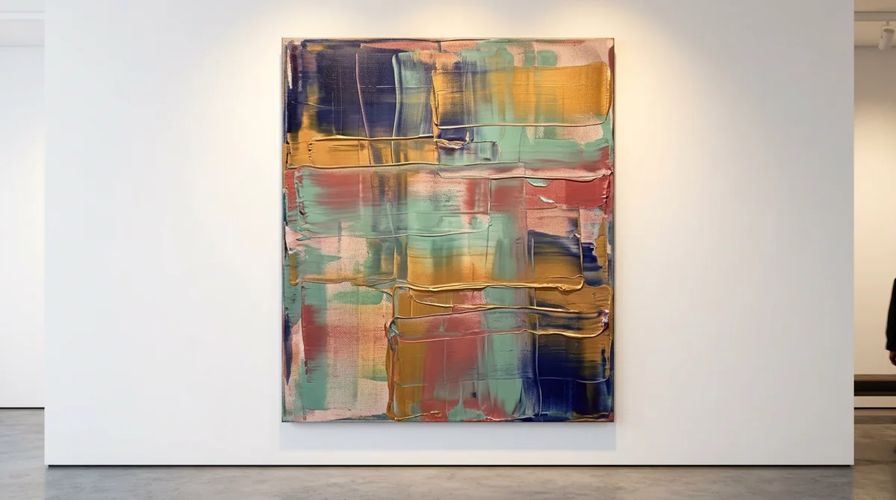
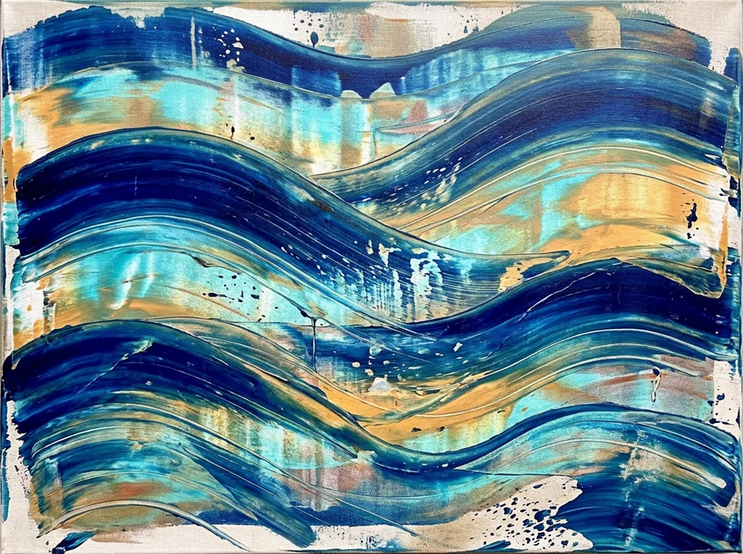
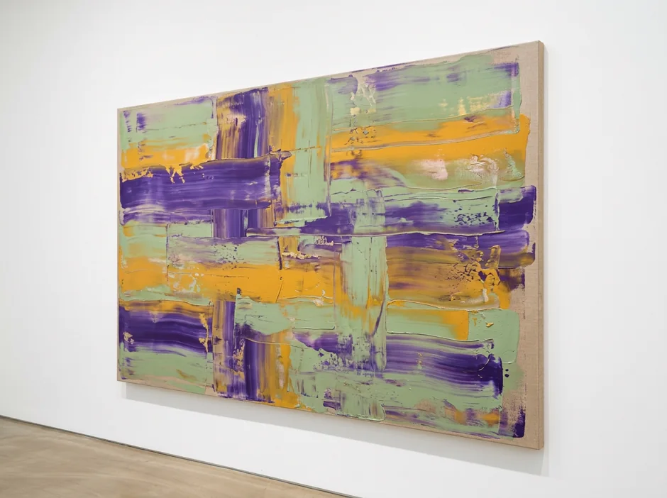

“괜찮아요” 입을 닫은 아이도,
스퀴지 물감 위에서는 속마음을 다 털어놓습니다.
겉으로 드러나는 ‘보여지는 색(2차 감정)’과 그 아래 겹겹이 눌려 있는 ‘보이는 색(1차 감정)’은 다릅니다. 삼청동 레지나 갤러리·인사아트 개인전 작가이자 인지행동 미술치료사인 박은진이 당신의 선과 색채 층위를 직접 읽어드립니다.

“우연들이 겹치면 필연이 되듯, 흔적이 겹치며 사유를 만듭니다.”
스퀴지(Squeegee)로 물감을 밀어내고 투명한 색을 중첩해 감정의 층위를 시각화하는 박은진 작가의 조형 언어
글을 쓰거나 그림을 그리기 전, 4초 들이마시고 6초 내쉬며 교감신경의 긴장을 낮춥니다.
‘보여지는 색’과 ‘숨겨진 속마음 색’의 간극 진단
박은진 작가의 《다름의 시선 : #색》 인터뷰 철학을 반영했습니다. 남들에게 애써 보여주는 겉마음(2차 감정)과 혼자 삼키는 속마음(1차 감정)을 각각 골라보세요.
“겉으로는 누구보다 책임감 있게 미소 짓고(#Yellow) 있지만, 그 아래에는 ‘내가 무너지면 어쩌지’ 하는 깊은 남색(#Indigo) 불안이 겹쳐 있습니다. 지금 필요한 건 더 잘 해내는 법이 아니라, 무거운 붓을 잠시 내려놓는 안전기지입니다.”

박은진, 《다름의 시선 : #Yellow & #Purple》 모티브
삼청동 레지나 갤러리 개인전 (2025) · 캔버스에 아크릴릭, 스퀴지 기법
같은 작품을 봐도 어떤 이는 밝은 노란색을 먼저 보고, 어떤 이는 그 밑에 깔린 어두운 보라색을 먼저 봅니다. 내 안의 두 가지 색이 충돌할 때, 그것을 억지로 지우지 않고 겹쳐진 그대로 인정하는 것이 치유의 시작입니다.
실시간 스퀴지·HTP 그림 분석 & 1차 인지행동 기록지
단순히 텍스트만 바꾸는 정적 예시가 아닙니다. 캔버스에 집·나무·사람(HTP)이나 마음의 파동을 그리면 필압·속도·화면 점유율·공간 무게중심·색온도를 실시간 측정해 5대 심리 지표와 맞춤 리포트를 생성합니다.
붓질 속도, 화면 점유율, 상하좌우 공간 배치, 스퀴지 횟수를 실시간 계측합니다.
박은진 아틀리에 1차 마음·조형 분석 기록지
캔버스의 중앙·하단 배치(점유율 28.4%)와 4회 중첩된 스퀴지 레이어에서, 감정을 폭발시키면서도 한편으로는 안전한 지지기반을 갈구하는 양가감정이 동시에 읽힙니다. 적어주신 고민 속 참다 터져 나오는 화와 부모로서의 자책감은 결코 이상한 반응이 아닙니다.
거친 행동이나 짜증은 말로 번역되지 못한 ‘2차 방어 감정’입니다. 박은진 작가의 《다름의 시선 : #색》 연작처럼, 겉으로 칠해진 붉은 분노(#Crimson) 레이어를 스퀴지로 살짝 밀어내면 그 아래에는 ‘내 마음을 알아달라’는 서운함과 긴장(#Indigo)이라는 1차 감정이 자리하고 있습니다.
- 감정이 올라올 때 훈계 대신 1차 감정 이름 붙여주기 (“화가 난 게 아니라 많이 서운했구나”)
- 타임아웃 대신 ‘시각적 안전 신호’(물 한 잔 마시며 색깔 카드 고르기) 약속하기
- 하루 3분, 내담자(부모/본인) 자신을 위한 ‘기억의 상자’ 스케치로 자책감 분리하기
언론이 주목한 서양화가 × 미술치료사 박은진의 세계
Arts & Culture, 한국미술신문, 피플투데이 에 소개된 전시와 작가 이야기를 만나보세요.
기억을 다시 마주하는 심리적 공명의 장
불안정한 심리 상태와 이인증(離人症·자신이 낯설게 느껴지는 증상)을 회화적 형식으로 자가 치유하며 출발한 연작입니다. 물감을 덧입히고 스퀴지로 밀어내는 반복 작업을 통해 파편화된 기억을 현재의 시선으로 재해석합니다.

‘보이는 것’과 ‘보여지는 것’ 사이의 관계 번역
작품 제목을 《#Purple》, 《#Yellow》처럼 해시태그로 명명하여, SNS에서 선택적으로 보여주는 단면 너머에 겹겹이 존재하는 입체적 감정을 탐구합니다. 관람자마다 먼저 발견하는 색이 다르듯 관계의 시선을 확장합니다.
학력 · 임상 · 국제 전시 이력
• 건국대 예술디자인대학원 미술치료학과 석사 (2023)
• 동국대 문화예술경영대학원 조형예술경영 석사
• 미술심리상담사 1급 (2022. 5. 18.)
• 두리하나국제학교 집단 미술치료 · 한국보육원 개인 미술치료 (2022)
• 2026 제5회 서울아트페어(이수갤러리), 《Look:바라보기》 2인전
• 2019 일본 나가사키현미술관 《염원의 불》 등대 모뉴먼트 전시
• 2016 서울 DDP Affordable Art Fair · 2015 청주국제아트페어
자살예방 상담전화 109 · 정신건강 위기상담 1577-0199 · 청소년 상담 1388
후기 체험
예시 후기가 포함되어 있습니다. 작성한 후기는 다른 방문자에게 공유되지 않으며 새로고침하면 사라집니다.